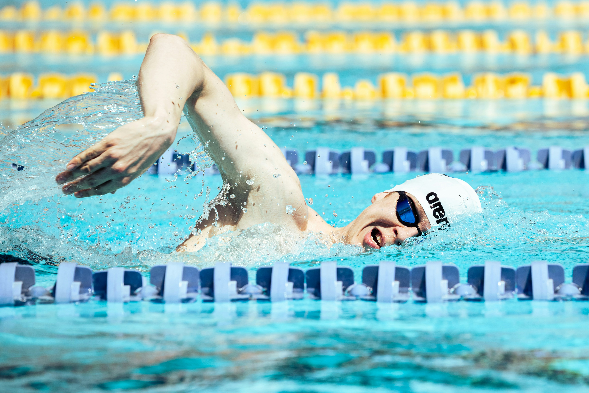

Simning är en träningsform och idrott som kombinerar styrka, uthållighet, snabbhet och teknik. Det är en aktivitet där hela kroppen arbetar för att ta sig fram genom vattnet så effektivt som möjligt. Simning kan utövas både som motion och som tävlingsidrott, där målet är att utvecklas, förbättra sina prestationer och simma snabbare.
Inom tävlingssimning finns fyra huvudsakliga simsätt: frisim, ryggsim, bröstsim och fjärilsim. Varje simsätt har sin egen teknik och ställer olika krav på kroppen. För att bli en bättre simmare behöver man därför träna flera olika egenskaper.
Simträning består ofta av olika moment, exempelvis teknikövningar, uthållighetsserier och snabbhetsintervaller. Genom att variera träningen kan simmaren utveckla sin teknik, förbättra konditionen och öka sin förmåga att simma snabbt och effektivt.
Oavsett om målet är att tävla eller bara utvecklas som simmare är regelbunden och varierad träning en viktig del av utvecklingen.
Inom tävlingssimning finns det fyra huvudsakliga simsätt: frisim, ryggsim, bröstsim och fjärilsim. Varje simsätt har sin egen teknik och sina speciella rörelsemönster. De skiljer sig åt när det gäller hur armarna och benen används, kroppens position i vattnet och hur simmaren andas. För att behärska de olika simsätten krävs både teknik, koordination och träning.
Frisim är det snabbaste simsättet inom tävlingssimning. Det vanligaste sättet att simma frisim är crawl, där armarna arbetar växelvis och benen utför snabba, växelvisa sparkar. Simmaren ligger på mage med kroppen så strömlinjeformad som möjligt för att minska vattenmotståndet. Andningen sker genom att huvudet vrids åt sidan mellan armtagen. Frisim används i flera olika tävlingsdistanser och är även en vanlig del av simträning.
Ryggsim utförs med kroppen liggande på rygg i vattnet. Armarna arbetar växelvis i stora cirkelrörelser samtidigt som benen utför en kontinuerlig benspark. Huvudet hålls relativt stilla och ansiktet är ovanför vattenytan, vilket gör att simmaren kan andas utan att behöva vrida huvudet åt sidan. En viktig del av ryggsimstekniken är kroppens rotation, som hjälper simmaren att få effektiva armtag.
Bröstsim är ett simsätt där armarna och benen arbetar symmetriskt. Armarna förs framåt och utåt i en cirkelformad rörelse, medan benen utför en så kallad grodspark. Till skillnad från frisim och ryggsim sker rörelserna mer samtidigt och i en tydlig rytm. Simmaren lyfter vanligtvis huvudet för att andas när armarna förs in mot kroppen. Bröstsim kräver god koordination och timing mellan arm- och benrörelserna.
Fjärilsim är ett tekniskt krävande simsätt som kännetecknas av att båda armarna förs fram samtidigt över vattenytan. Benen arbetar tillsammans i en vågrörelse som kallas delfinkick. Kroppen rör sig upp och ner i vattnet för att skapa ett effektivt flyt genom simtaget. Andningen sker vanligtvis framåt när huvudet lyfts över vattenytan. Fjärilsim kräver mycket koordination, styrka och uthållighet för att kunna utföras effektivt.